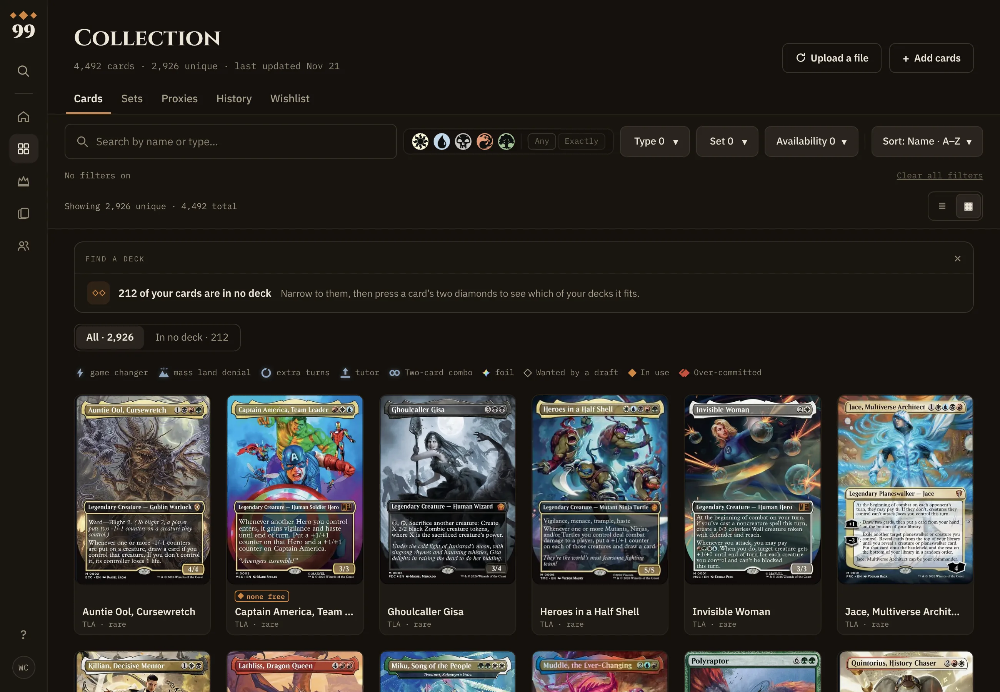
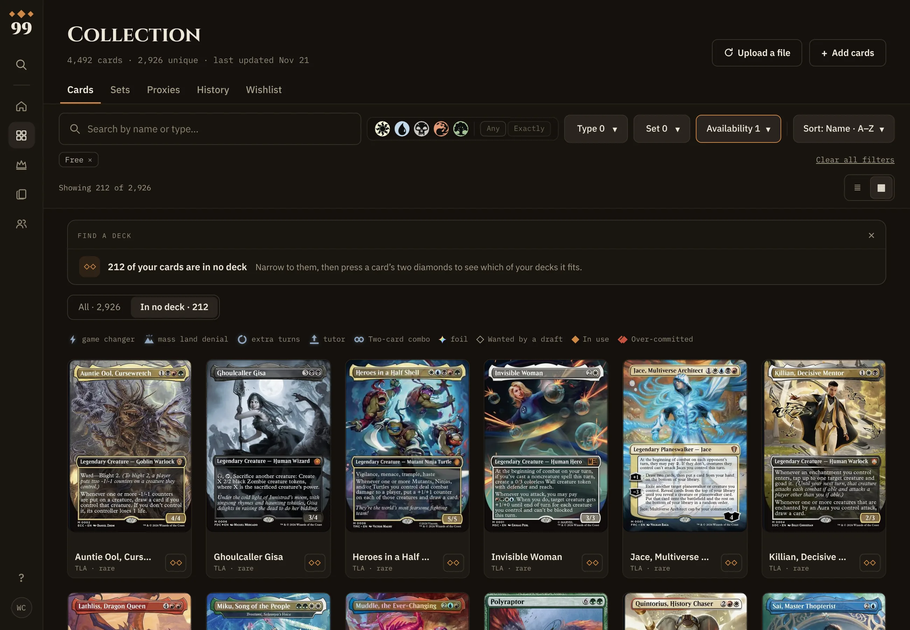
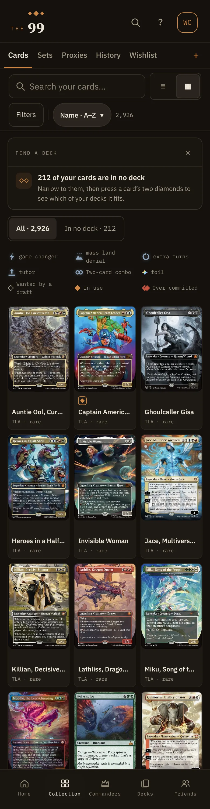
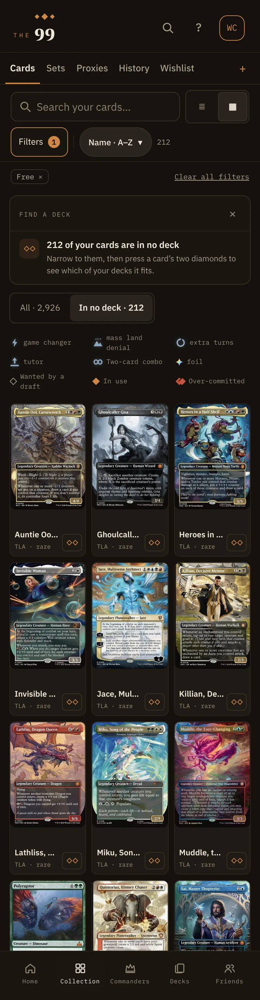

/collection's Cards tab. C0 the call-out and switch on All, C1 narrowed to In no deck with a press on every tile, C2 the press opens Find a deck straight (shipped view, Killian, one deck fits). Desktop first, then the phone.

C0 · All
Call-out and switch; no presses on All.

C1 · In no deck
The Free chip, the switch on, a press on each tile.
C2 · The press opens Find a deck
The card window straight on the view; ← the card goes to its details.

C0 · All
The call-out sits under the chip row, the switch under it.

C1 · In no deck
Names run clear of the press (the you-have-it fix).
C2 · Find a deck
The phone card window, on the view.